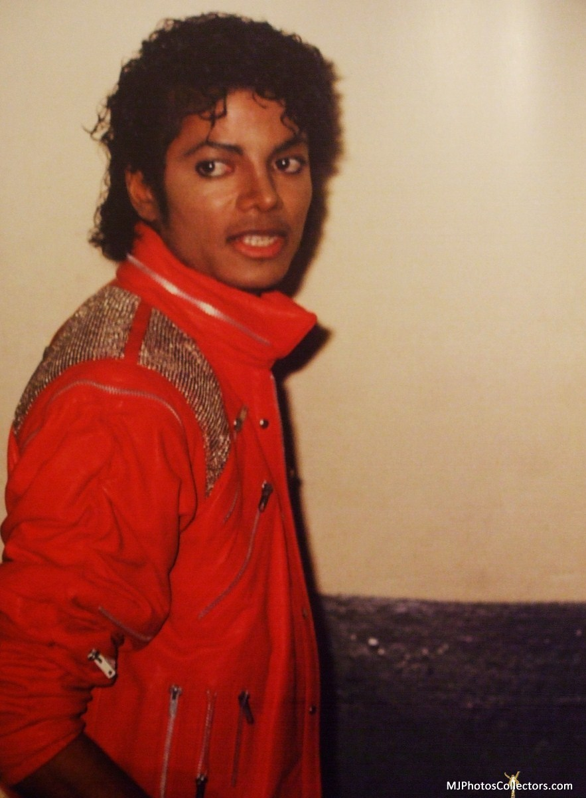
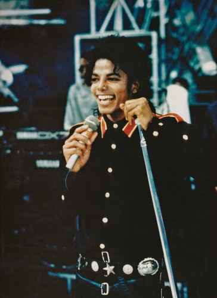
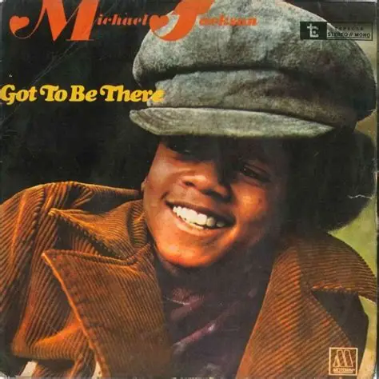
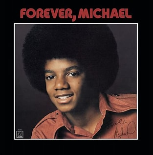
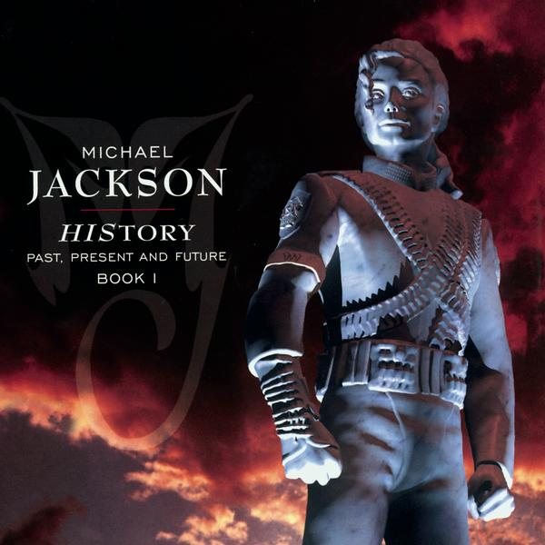

Michael Jackson
Michael Joseph Jackson (1958–2009), known as the "King of Pop", was one of the most influential entertainers in the history of music. His groundbreaking performances, iconic dance moves, and timeless hits revolutionized pop culture and inspired generations worldwide.
Achievements
- Lead singer of The Jackson 5 at a young age
- Released Thriller (1982), the best-selling album of all time
- Won 13 Grammy Awards and numerous other honors
- Invented iconic dance moves like the Moonwalk
- Transformed music videos into cinematic experiences
- Inducted twice into the Rock & Roll Hall of Fame
- Known for humanitarian efforts and global influence
Albums

Got to Be There (1972)

Forever, Michael (1975)

HIStory: Past, Present and Future, Book I (1995)
Key Moments
| Year |
Moment |
| 1969 | Debuted with The Jackson 5 |
| 1982 | Released Thriller |
| 1983 | Performed Moonwalk on TV |
| 1993 | Received Grammy Legend Award |
| 2009 | Passed away, leaving a global legacy |
“If you wanna make the world a better place, take a look at yourself and make a change.” – Michael Jackson
MJ Legacy
Michael Jackson's legacy continues to shape music, dance, and entertainment. His influence spans across genres and generations, inspiring artists worldwide. From his philanthropic efforts to his innovative artistry, Jackson remains a symbol of creativity, compassion, and excellence.